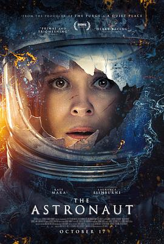

4.5
异星迷航
The Astronaut
2025
美国
评分 4.5
导演:
杰西卡·瓦利
演员:
凯特·玛拉 / 劳伦斯·菲什伯恩 / 加布里埃尔·鲁纳 / 伊万娜·米利切维奇 / 玛西·格雷 / 斯嘉丽·霍姆斯 / 礼萨·迪亚科
类型:
惊悚,科幻
剧情简介
宇航员萨姆·沃克完成了她的首次太空任务，却在返回途中坠入大西洋。虽然被救援队发现并带回地球，但她的记忆却像被撕裂般断裂——醒来后，她被安置于一处高度戒备的设施，四周稀无人迹。萨姆带着对丈夫马克和女儿伊齐的思念，却慢慢察觉，自己所处的世界并不如想像中平静。在这座遥远的安全屋里，墙壁里暗藏摄像头，监控室在地下，一切似乎都是精心布置。萨姆在整理回忆片段时，梦见自己在轨道舱受困、看见黑影士兵在林中徘徊。与此同时，她的身体反应能力突然增强，手臂上出现神秘淤伤，从略微青紫逐渐蔓延。美国空军将军哈里斯频繁造访，他的真面目也似乎隐藏着某种企图。在一次夜间电力中断时，萨姆被迫躲进地下掩体。屋外，隐藏的生命体突破防线，钻入她与家人的领域。通过一段已保存为“救援录像”的资料，她得知：那条随她回地球的并非人类，而是一种外星实体。她自身的身份开始被颠覆——真正的她仍沉眠海底，而苏醒的，是一个隐密的外星替身。影片营造出一种环环递进的压迫感：光滑墙面、低语警报、透过夜窗泄进来的叶影、摄像头红灯的闪烁，都在告诉观众：这场归来，几乎是回到了战场。萨姆要面对的不只是“如何回家”，而是“我是谁”这一根本问题。当她目送飞船划破夜空、离开这片她原以为属于的地球时，观众才明白：即便“归来”了，真正的家却早已改变。